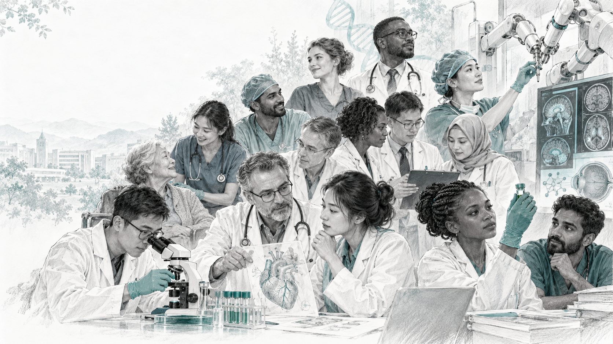

从未被满足的需求出发
一个被忽略的人群，一段难以获得治疗的经历，都可能成为创新的起点。
讨论：谁的需求没有被看见？INNOVATION & ENTREPRENEURSHIP
有人发现新的治疗方法，有人重新组织医疗服务。
沿着30位创新者的足迹，寻找改变发生的地方。

THE PEOPLE / 人物档案
A CLOSER LOOK / 精选故事
如果手术已经可以恢复视力，
为什么还有人无法获得治疗？
戈文达帕·文卡塔斯瓦米 / Dr. V
商业模式与可及性 · 服务与流程事实起点已附来源；推广机制与影响数据留待进一步研究。点击右侧章节展开。
CONNECTED MINDS / 人物联系
CONNECT THE DOTS / 课程分析
分析视角，尚不是30人的统计结论。
一个被忽略的人群，一段难以获得治疗的经历，都可能成为创新的起点。
讨论：谁的需求没有被看见？将科研、工程、组织管理与社会实践连接起来，形成新的解决办法。
讨论：哪些边界被跨越了？从有效的想法到可持续的服务，需要团队、资源，以及被采用的条件。
讨论：是什么让创新得以推广？突破性关注能力的显著跃迁；颠覆性还需要考察新市场或低端市场切入及后续市场变化。影响巨大，不自动等于颠覆性创新。
AN ATLAS OF CHANGE / 下一位创新者